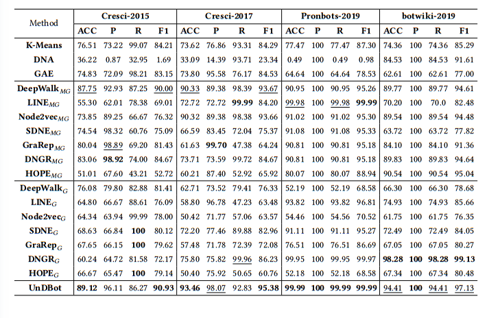
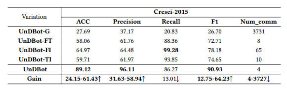
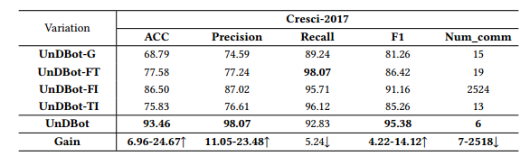
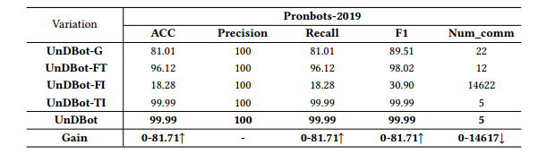
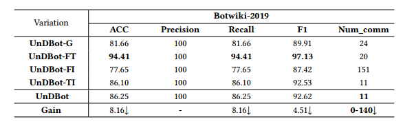

Unsupervised Social Bot Detection via Structural Information Theory
Submited ACM in 2023.8
TL;DR An unsupervised and interpretable social bot detection framework is proposed with high accuracy that decodes the significant structural features of the network using structural information theory.
Abstract UnDBot offers an unsupervised, interpretable, and practical solution based on structural information theory. Our framework optimizes heterogeneous structural entropy by aggregating edge information from the multi-relational graph, resulting in a two-dimensional encoding tree. We also introduce a community labeling technique that identifies bot communities by analyzing user contributions to network structure and community engagement.
UnDBot architecture UnDBot consists of three key modules: multi graph construction, user community partitioning, and community binary classification. (1) Multiple relationship graph construction. Firstly, based on the similarity of behavioral characteristics, social users are constructed into a multi relationship graph. (2) User Community Department. After the construction process of the graph, an optimal two-dimensional encoding tree was created based on the principle of minimizing structural entropy. In addition, social users are assigned to different subtrees on the encoding tree, resulting in community partitioning. (3) Community binary classification. For each community, use stationary distribution and community entropy to quantify community impact and cohesion, and then apply them to binary classification. The architecture diagram of the model is shown above.
Experiments We employ four publicly available social user datasets to assess the performance of the models in the context of social bot detection. The baselines are: K-means ,DNA ,DeepWalk ,LINE ,Node2vec ,SDNE ,GraRep ,DNGR ,HOPE ,GAE. We have generated several variants of the complete UnDBot model: UnDBot-FT ,UnDBot-FI ,UnDBot-TI ,UnDBot-G.
Comparison of the across different methods for social bot detection: 
Distribution of user embeddings generated by unsupervised graph learning models on the Cresci-2015 and Cresci-2017 datasets:

Distribution of user embeddings generated by unsupervised graph learning models on the Botwiki-2019 and Pronbots2019 datasets:

Comparison with the ACC,Precision,Recall, F1 and the number of communities of different variations on Cresci-2015 dataset: 
Comparison with the ACC,Precision,Recall, F1 and the number of communities of different variations on Cresci-2017 dataset: 
Comparison with the ACC,Precision,Recall, F1 and the number of communities of different variations on Pronbots-2019 dataset: 
Comparison with the ACC,Precision,Recall, F1 and the number of communities of different variations on Botwiki-2019 dataset: 
Average time per run for UnDBot and all baselines:

Conclusion This paper investigates a framework for supporting the unsupervised detection of social bots. The proposed UnDBot framework adaptively performs hierarchical community partitioning and identifies social bot communities during social bot detection. By modeling social user networks based on social behavior similarity, we effectively enhance the connections between social bots. The parallel execution of fusion operators during community partitioning maintains a stable community structure while ensuring high operational efficiency.Experimental results demonstrate that UnDBot outperforms all unsupervised models in terms of accuracy, achieving a balance between operational efficiency and performance while exhibiting strong interpretability.